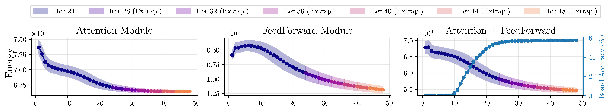
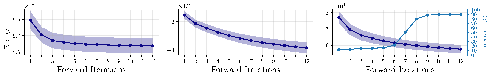
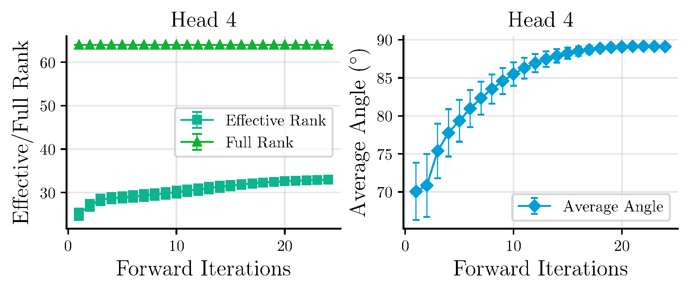
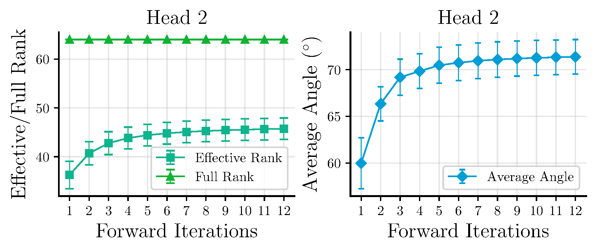
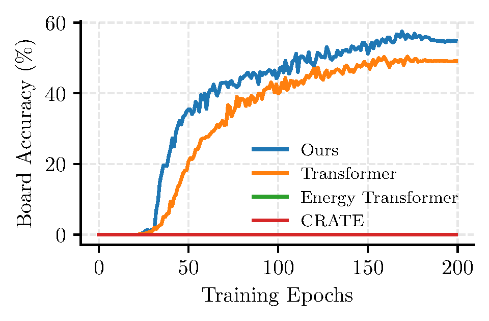
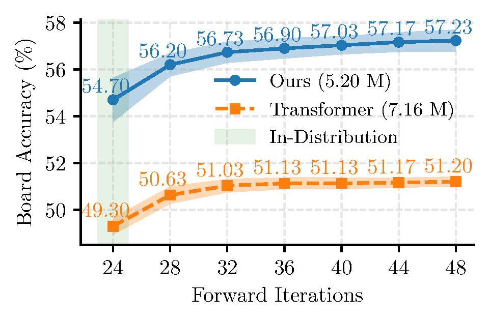
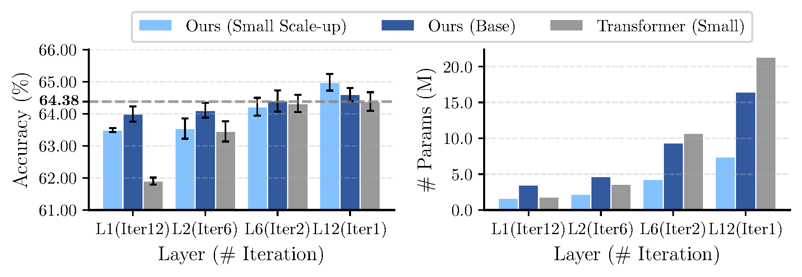
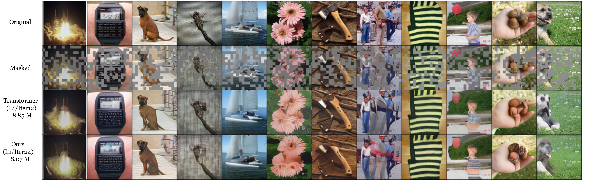

Hyperspherical Energy Transformer: Core components emerge from iterative energy minimization on the hypersphere.
Abstract
Transformer-based models have achieved remarkable success, but their core components are largely heuristics-driven and engineered from the bottom up, calling for a prototypical model with high interpretability and practical competence.
To this end, we conceptualize a principled, top-down approach grounded in energy-based interpretation. Specifically, we formalize token dynamics as a joint maximum likelihood estimation on the hypersphere, featuring two properties: semantic alignment in the high-dimensional space and distributional uniformity in the low-dimensional space. By quantifying them with extended Hopfield energy functions, we instantiate this idea as a constrained energy minimization problem, which enables designs of symmetric attention and feedforward modules with RMS normalization.
We present Hyper-Spherical Energy Transformer (Hyper-SET), a recurrent-depth alternative to vanilla Transformers naturally emerging from iterative energy optimization on the hypersphere. With shared parameters across layers, Hyper-SET can scale to arbitrary depth with fewer parameters. Theoretically grounded and compact, it achieves competitive or superior performance across diverse tasks, including Sudoku solving, image classification, and masked image modeling.
From Principle to Architecture
Core Fundamental Question
Can we find a principled function prior that makes a Transformer interpretable by construction, rather than by post-hoc analysis?
This question motivates Hyper-SET and organizes the whole design from objective to architecture.
What: Hyper-SET reframes the forward pass as iterative minimization of a dual energy objective on the hypersphere, yielding attention, feedforward, and normalization from one principled formulation.
Why: This shifts model design from heuristic stacking to objective-driven construction, improving interpretability while retaining strong practical performance.
Motivation via Maximum Likelihood on the Hypersphere
The key question is not which layer to add, but what geometric behavior good token representations should exhibit. We conjecture that effective representations should exhibit two complementary properties: semantic alignment in a high-dimensional space and distributional uniformity in a low-dimensional subspace. This dual perspective reflects the balance of mode seeking and mass covering.
We formalize this under maximum likelihood estimation:
and the feedforward energy promotes semantic alignment:
$$E_{\text{FF}} = -\frac{1}{2}\sum_{i=1}^N\sum_{m=1}^M\left(\operatorname{ReLU}\left(\mathbf{d}_m^\top\mathbf{x}_i\right)\right)^2, \quad \text{subject to } \|\mathbf{D}^\top\mathbf{x}_i\|_2 = \sqrt{M}.$$
Attention and feedforward are not independent design tricks. They are complementary optimization forces with distinct geometric roles.
Derivation of Architecture
By discretizing the gradient flow of this dual energy under spherical constraints, we recover the main architectural ingredients of Hyper-SET. This is a first-principles construction, not a hindsight reinterpretation.
These adaptive step sizes allow the recurrent dynamics to remain faithful to the optimization viewpoint, while also explaining why the model can extrapolate in computation more gracefully than a standard Transformer.
Mechanistic Analysis
The empirical goal is not only to show that Hyper-SET performs well. More importantly, it is to show that the proposed principle leaves observable traces in the learned dynamics: the energy decreases, the token geometry becomes more uniform in subspaces, and these behaviors coincide with competitive downstream performance.
If the framework is meaningful, then training should not only improve task metrics; it should also reveal the geometric dynamics predicted by the theory. We therefore examine three families of evidence:
Energy trajectories test whether the induced dynamics behave like the minimization procedure they are meant to approximate.
Effective rank tests whether projected tokens spread across subspaces rather than collapsing.
Average angle tests whether those tokens become more uniformly separated, approaching a near-orthogonal arrangement on the hypersphere.
Energy Trajectory
Both attention and feedforward energies decrease during optimization, supporting the interpretation that the layer dynamics align with the proposed objective. Without hard constraints on the sign of step sizes, the energy decreases within training iterations and extrapolates smoothly beyond them, confirming the generalization of learned adaptive step sizes.


Energy evolution on Sudoku (top) and CIFAR-10 (bottom) validation sets.
Effective Rank and Average Angle
To validate our motivation to mitigate token synchronization in subspaces, we measure two metrics: effective rank and average angle. The effective rank is a continuous approximation of the full rank and, similar to the average angle, reflects the extent to which a set of vectors distributes uniformly.
As forward optimization progresses, the effective rank within each subspace steadily rises while the full rank remains unchanged. This dynamic mirrors that of the average angle, which increases from around 70° to near orthogonal. This implies that tokens in the subspaces occupy maximal hyperspherical volume, and the information encoded in the low dimension gradually saturates.

Geometric analysis on Sudoku test set.

Geometric analysis on CIFAR-10 validation set.
Together, these analyses test the framework at the level of mechanism, not only at the level of end metrics. They show that the model behaves in the way the theory says it should behave.
Empirical Results
The experiments serve as supplementary evidence that the framework is not merely elegant, but also practically useful. We present results on three diverse tasks: Sudoku solving (reasoning), image classification (discriminative learning), and masked image modeling (generative learning). The central message is that a more interpretable, more principled, and often more compact Transformer can still be highly competitive.
Sudoku Solving
Sudoku provides a clean stress test for iterative computation. Hyper-SET outperforms vanilla Transformer (54.70% vs 49.30%) and exhibits superior test-time extrapolation when increasing iterations beyond training, demonstrating the effectiveness of learned adaptive step sizes.

Training dynamics on Sudoku.

Test-time extrapolation on Sudoku.
Image Classification
On CIFAR-10, CIFAR-100, and ImageNet-100, Hyper-SET achieves competitive or superior accuracy compared to Transformer while using significantly fewer parameters. The framework that is geometrically and theoretically motivated also remains practically useful under standard benchmarks.

Top-1 accuracy and model parameters on CIFAR-100 with different layer-iteration trade-offs. Hyper-SET consistently surpasses Transformer with parameter efficiency.
Model
Width
#Params (M)
CIFAR-10
CIFAR-100
IN-100
IN-1K
Transformer
384
2.38
89.90
61.89
69.44
66.94
CRATE-T
896
3.04
87.54
60.23
68.16
57.89
CRATE
768
3.00
84.81
58.22
68.52
57.00
Energy Transformer
512
2.39
76.39
50.60
36.68
34.24
Hyper-SET (Ours)
512
2.39
90.11
63.41
70.16
62.76
Hyper-SET (Ours)
640
3.40
89.96
64.60
69.31
66.21
Top-1 accuracy (%) for single-layer recurrent-depth models. Parameters are measured on ImageNet-1K. All models are trained from scratch on the listed datasets.
12-layer Non-recurrent Model
Width
#Params (M)
CIFAR-10
CIFAR-100
CIFAR-10†
CIFAR-100†
IN-1K
Transformer
384
21.86
87.44
62.84
96.95
83.10
67.90
CRATE
512
10.28
88.76
63.94
94.18
77.39
60.69
Hyper-SET (Ours)
512
8.17
88.82
64.98
95.76
80.89
66.26
Hyper-SET (Ours)
768
17.56
88.53
64.16
96.47
82.60
67.20
Top-1 accuracy (%) for 12-layer non-recurrent-depth models. Parameters are measured on ImageNet-1K. † means first pretraining on ImageNet-1K and then fine-tuning on CIFAR-10/100.
Masked Image Modeling
Masked image modeling offers a generative-style setting where representation quality matters in a different way. Hyper-SET performs competitively here as well, further indicating that the framework is broad enough to support both discriminative and generative learning scenarios.

Visualization of masked image modeling results on ImageNet-100.
Model
Iters
FF Ratio
#Params (M)
PSNR ↑
SSIM ↑
MS-SSIM ↑
LPIPS ↓
FID ↓
Transformer
12
4d
8.85
15.953
0.417
0.599
0.327
43.428
Hyper-SET (Ours)
12
1d
3.94
15.713
0.411
0.576
0.358
59.841
Hyper-SET (Ours)
24
8d
8.07
15.955
0.417
0.596
0.332
45.174
Comparisons of masked image modeling performance on ImageNet-100 (5k). All models use a single layer. ↑ indicates higher is better, and ↓ indicates lower is better.
Discussion
These results should be read as follows:
Mechanism first: The framework is validated first through energy and geometry, and only then through benchmark performance.
Benchmarks as corroboration: The three application domains serve as supplementary evidence that the framework is not merely elegant, but also useful.
Not just another variant: The central contribution is a principled way to view and design Transformers, not simply a new point on a leaderboard.
Open-ended impact: Because the framework is objective-driven, it naturally invites future work on new energies, operators, and scalable recurrent schemes.
Generality and Extensions
The broader promise of Hyper-SET is a design language for follow-up work. Because the framework is defined by objective and energy, future research can extend it systematically rather than heuristically. By generalizing the energy functions, we can induce alternative attention operators and feedforward structures:
Alternative designs on attention energy \(E_{\text{ATTN}}\) and induced operators (from source Appendix G). \(\sigma\) denotes sigmoid and \(\Phi\) is an element-wise transform.
Alternative designs on feedforward energy \(E_{\text{FF}}\) and induced operators (from source Appendix G).
Scalability with Depth-wise LoRA
We evaluate depth-wise LoRA by varying the adapter rank \(r\) and reporting ImageNet-100 accuracy. The results show that depth-wise adaptation improves performance while adding only modest parameter overhead.
Model
# Params (M)
Accuracy
Hyper-SET (Ours)
1.93
70.16
+ depth-wise LoRA (\(r=4\))
2.03
70.36
+ depth-wise LoRA (\(r=8\))
2.13
70.40
+ depth-wise LoRA (\(r=16\))
2.33
70.56
+ depth-wise LoRA (\(r=32\))
2.72
72.20
ImageNet-100 accuracy (%) of Hyper-SET under different LoRA ranks \(r\). Depth-wise LoRA introduces representation flexibility at each iteration.
Conclusion
Hyper-SET frames Transformer forward computation as joint maximum-likelihood estimation on hyperspheres, connects energy-based learning to practical architecture design, and opens a principled route to new model variants. In this view, core Transformer components are not arbitrary choices; they are solutions to an underlying energy minimization problem.
BibTeX
@inproceedings{
hu2026hyperset,
title={Hyper-{SET}: Designing Transformers via Hyperspherical Energy Minimization},
author={Yunzhe Hu and Difan Zou and Dong Xu},
booktitle={The Fourteenth International Conference on Learning Representations},
year={2026},
url={https://openreview.net/forum?id=FinhjyDgYA}
}